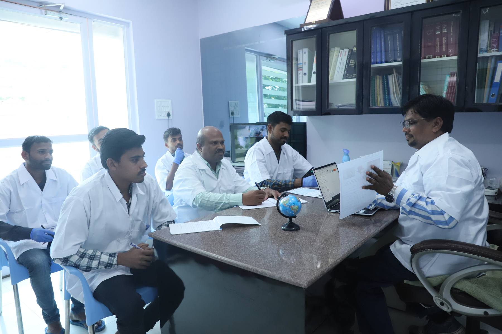

Ullmann Laboratories Private Limited established in 2016 is a leading provider of independent analytical services for Pharmaceuticals, Food, Environmental and microbiological attributes of products. We also supply phytochemicals, analytical standards, Isolates & small fine chemicals.
 The Ullmann laboratories are staffed by trained chemists, technicians, microbiologists and laboratory management with years of industry knowledge and expertise. ULPL analytical laboratories provide testing services for Raw materials, intermediates, finished product and packaging material to a broad range of clients, markets and industries. ULPL offers analytical laboratory techniques, laboratory instrumentation and testing methods, providing the critical analysis information clients need for trouble-shooting, research, quality control and many other requirements and applications. ULPL chemist, technicians and microbiologists provide the crucial product & laboratory support client need to help run their business and meet product research and development, and quality goals.
ULPL helps clients solve quality issues, support research projects, products developments, trouble-shoot, mitigate risk and much more.
The state of the art microbiology laboratory is designed to comply with the regulatory requirements. Documentation system is designed and developed in such a way that it assures compliances and data integrity. Microbiology laboratory is capable of performing analysis of Packing materials, Raw materials, Intermediates, finished products, environmental samples, Water samples, Soil samples and Food samples. The microbiology laboratory is all set for validations and qualifications for products and process.
We have established the state of the art Tissue Culture laboratory and Medicinal Mushroom cultivation laboratory. Research and Development in the field of Tissue Culture & Mushroom cultivation added another feather in our cap. We are producing Cordyceps militaris a highly potent medicinal mushroom for healthy and energetic life of human being, with great efficiency and with consistent quality attributes. We have set Standard Operating Procedures (SOP’s) for all the activities carried out at ULPL, to assure consistent quality and reproducibility. Our major focus is to produce natural phyto-chemical agents .
ULPL is a full service analytical laboratory, focused on accurate results and excellent quality control. We perform all studies and analyses in complete compliance with CGMP/GLP regulations, as well as with meticulous adherence to our own stringent QA/QC guidelines.
Included in our QC procedure is an emphasis on confidentiality. We know how important your products and formulas are to you, and you can be assured that discretion a priority with us is.
Accountability is very important to us. Our laboratory's system was designed for accuracy and tractability of laboratory documentation. Our tracking system includes data on each sample from the moment it arrives at our office, until the results are released to you.
Our staff consists of skilled and experienced professionals with expertise in chemistry. ULPL's professional team performs a wide range of chemical and instrumental analyses, using official, In-house developed procedures and state-of-the-art instrumentation.